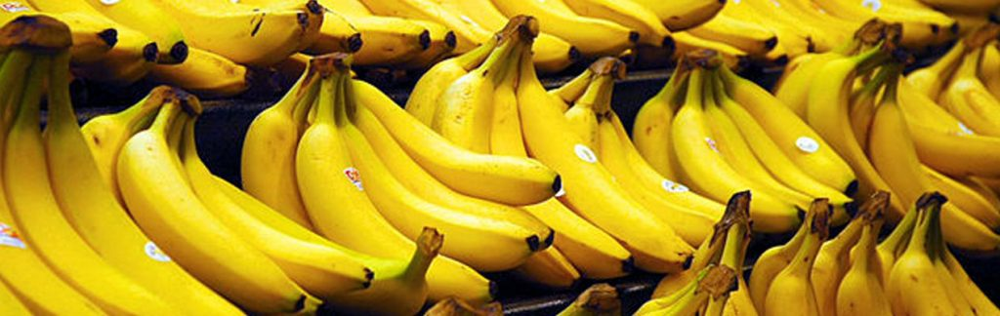

Our Story: A Journey with Bananas
Welcome to Goin' Bananas for Bananas, where the love for this tropical delight led to the creation of a unique haven for banana enthusiasts worldwide.
Our story began in the heart of Toronto, where a group of friends discovered a shared passion for all things bananas. It wasn't just about the fruit; it was about the joy, the quirky charm, and the endless possibilities that bananas bring to our lives.
Inspired by this shared enthusiasm, we embarked on a mission to create a space that celebrates the vibrant and diverse world of bananas. From the bustling streets of downtown Toronto to the cozy corners of Etobicoke, we planted the seeds of our banana empire.
What started as a humble idea blossomed into Goin' Bananas for Bananas, your ultimate one-stop shop for anything that's bananas. Our stores are more than just retail spaces; they are lively hubs of banana appreciation, where customers can explore a curated collection of banana-themed merchandise and indulge in the unique flavors of this beloved fruit.
We've scoured the globe to bring you a diverse selection of banana varieties, each telling a story of its origin and contributing to the rich tapestry of banana culture. Our shelves are stocked with quirky apparel, delightful home decor, innovative kitchen gadgets, and delectable banana-flavored treats, ensuring there's something for every banana enthusiast.
Whether you're a devoted fan or a newcomer curious to explore the world of bananas, our store is designed to spark excitement and infuse a bit of fruity charm into your life. Join us on this banana-filled journey, and let's celebrate the joy that comes with going bananas together!
Thank you for being a part of our banana-loving community.
Sincerely,
The Goin' Bananas for Bananas Team